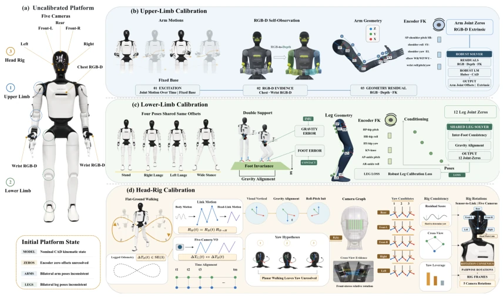
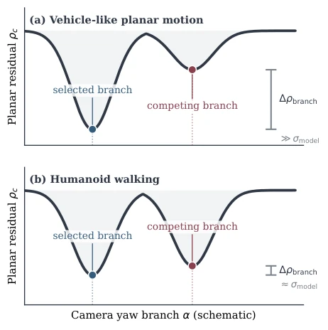
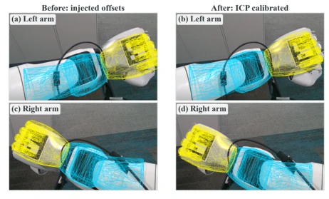
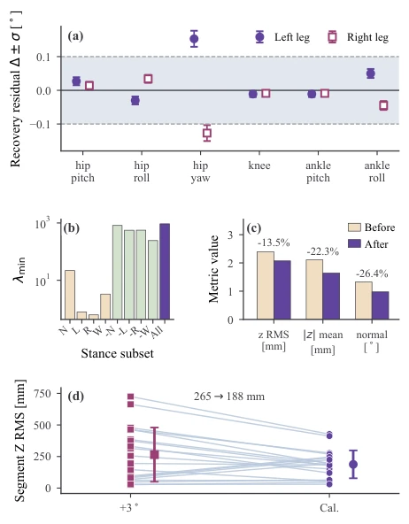
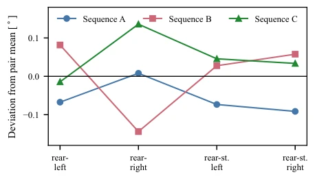

OmniCalib has lightened the burden of robot calibration; no need to search for chessboards and AprilTags everywhere, calibration can be achieved relying on the robot's own movement. The core highlight is "task structuring"; different actions calibrate different parameters, observability determines what is written back, this train of thought is very clear-sighted. The upper limb uses depth ICP to calibrate 14 joint zero offsets and camera extrinsics; the lower limb relies on double-support standing poses; the head relies on walking. The results are indeed solid; joint errors are compressed within 0.1 degrees; head rotation benchmarking against iKalibr also saves 6DOF excitation. However, a critique: the head only calibrates rotation, not translation, after all planar walking has poor observability for translation, but does this count as "taking a shortcut"? Additionally, this method relies on specific actions (walking, standing poses); if the robot can only crawl, it won't work. In short, it is quite practical in engineering, but theoretical completeness is still discounted, belonging to the "good enough" camp.
Humanoid robots have many sensors and joints; CAD models are often inaccurate due to assembly errors and wear, leading to perception and control deviations. Traditional calibration relies on external targets such as chessboards [3], AprilTags [7], or laser trackers [4], with high costs and requiring manual operation, unsuitable for field deployment. Existing self-calibration methods mostly require manual marking [14] or only cover partial sensors [11], lacking full-body target-free joint calibration. Humanoid robots are non-rigid bodies; sensor motion needs to be projected through kinematic chains, which differs from vehicle calibration. OmniCalib aims to solve this problem, utilizing the robot's native motion (such as walking, arm swinging) and onboard sensing to achieve full-body parameter calibration without external references, improving deployment efficiency and maintenance convenience, avoiding frequent shutdown calibration.
The overall process is divided into three modules: upper limb, lower limb, and head, sharing a write-back interface. The upper limb module utilizes in-place arm swinging actions, observing the hand via the chest RGB-D camera for depth ICP matching, jointly optimizing 14 joint zero offsets and camera extrinsics. The lower limb module utilizes four double-support standing poses, constraining the transform between feet to be constant, combining IMU and encoders to optimize 12 leg joint zero offsets. The head module utilizes planar walking, combining leg odometry and multi-view visual odometry, optimizing the rotation from camera to link. The core innovation lies in observability analysis; using the Hessian matrix to judge parameter observability, only observable parameters are written back to the CAD model, unobservable ones retain original values. Additionally, the head module introduces dynamic tf compensation, projecting foot trajectories onto the kinematic joint chain, solving the humanoid non-rigid problem, ensuring hand-eye constraint consistency.

Fig. 1. Task-structured whole-body calibration workflow. From a nominal CAD model (a), each robot-native motion constrains one parameter block and writes only observable corrections back to one model. In (b), in-place arm actions with chest RGB-D self-observation recover the arm joint zeros and chest extrinsic. In (c), four double- support stances recover the twelve leg joint zeros. In (d), flat-ground walking with legged odometry recovers the five head-rig rotations.

Fig. 2. Schematic yaw observability under planar motion. Vehicle-like motion separates the selected and competing residual basins beyond the model-error scale, whereas humanoid walking can leave nearly indis- tinguishable mirrored-yaw branches. The multi-camera graph and fixed structural baseline resolve this at the rig level.
Validated on AGIBOT A3 Ultra. Upper limb injected with 14 joint errors, ICP recovery error < 0.1 degrees, better than ArUco. Lower limb injected with 12 joint errors, RMS error 0.063 degrees. Head uses three walking sequences, SO(3) error mean 1.061 degrees, better than iKalibr's 0.902 degrees (iKalibr requires 6DOF excitation). Ablation experiments show dynamic tf compensation is crucial for consistency. Results prove planar walking can achieve high precision, and repeatability between different sequences is good. But head translation is not calibrated, and relies on specific motion patterns, generalization needs verification. Experiments also compared CamOdoCal, proving the necessity of dynamic projection.

Fig. 4. Chest RGB-D projections of the left and right arms before (injected joint offsets) and after ICP calibration.

Fig. 5. Lower-limb evidence. Panel a shows twelve- joint injection recovery and local uncertainty. Dashed lines mark the ±0.1◦encoder-resolution reference. Panel b shows stance complementarity. The full four-stance set gives the largest minimum Hessian eigenvalue. Panel c shows held-out static validation over 12 bags. Foot- height RMS falls from 2.396 to 2.074 mm. Sole-normal tilt falls from 1.326◦to 0.976◦. Panel d shows walking replay. Removing a virtual +3◦hip-pitch offset cuts the 20-segment vertical RMS from 265.0 to 188.1 mm. Horizontal RMS changes by less than 1%.

Fig. 6. Cross-sequence repeatability of the four rig- relative angles, shown as deviations from their pairwise means.